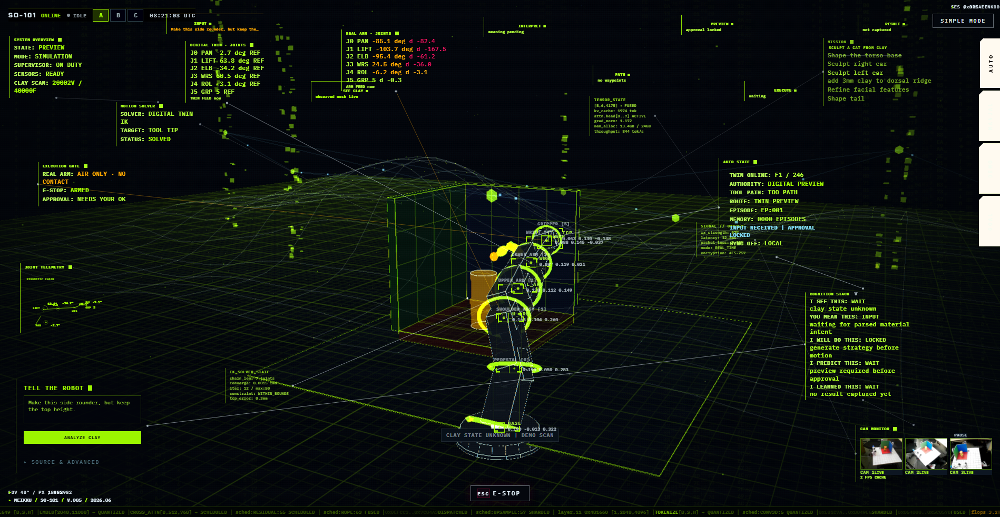

Under the hood — a cybernetic loop
Nobody drives.
Nobody drives.
Everybody steers.
MEIKKU runs as a classic feedback loop with six players. You compare what you see with what you want and type one line. The AI reads it — plus everything the loop remembers — locates the target on the observed clay mesh, and plans a bounded tool path with every waypoint clamped to safe, reachable limits. The arm solves the motion and touches the clay, which deforms, keeps the mark, and sometimes answers back. Cameras fuse each change into a fresh 3-D mesh, and the memory logs every message, path and frame as context for the next turn.
RGB + depth → live clay meshlanguage → bounded tool pathBlender solves the IKevery turn logged as dataset
Open the black box →